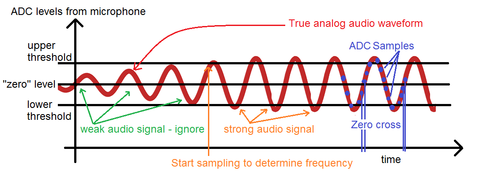
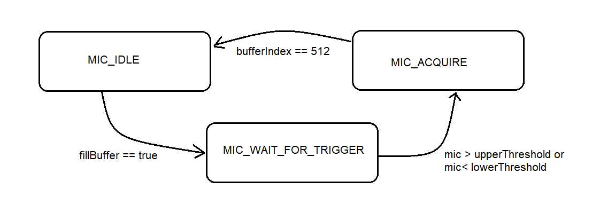

EENG 383
Lab 8 - Microphone
InLab 8
Some self guided
activities.
Lab 8 assignment
Write a program that determines the frequency of a sin wave audio input
provided by a whistle or audio function generator (like Keuwlsoft
Dual Channel Function Generator for Android or Tone Generator Audio
Frequency for iPhone). In order to ensure that you have usable data,
your algorithm will wait until the sound level measured by the microphone
exceeds a upper or lower sound threshold level as shown in the following
image.

When enabled, the ISR will have the responsibility to:
- Determine if the ambient sound level exceeds
either the upper or lower threshold,
- When this happens to fill a 512 byte buffer with audio samples
collected from the microphone. These samples will be collected
every 25µs. The buffer will be 512 bytes long - be careful
with the data type of your counting variables (uint8_t can only
count up to 256, not 512).
- When the buffer is full, set a flag true alerting main that
the buffer is full.
Main will be polling this flag and when it is true will go
on to determine the period of the waveform as follows.
- Have main scan the buffer, that was filled by the ISR, to determine
indicies where the microphone samples increased past the value of 128.
In other words, look for array indicies where buffer[index] ≤ 128 and
buffer[index + 1] > 128. We will call these positive edge crossing
because the microphone values are increasing through a threshold value, 128.
- Store all these positive edge crossing indicies into an array.
- Have main determine the number of indicies between adjacent positive
edge zero crossing.
- Compute the average of all the periods collected and then print
the average and, from this information, the frequency. There will be
some further discussion below about how to do this so that you can
extract the maximum amount of information from the data you have.
Since the microphone was sampled every 25µs by the ISR, the average
number of indicies between consecutive positive edge crossing times
25µs, is equal to the period. You will represent your answer in
microseconds, this will allow you to perform all your math using integers.
If you are having issues where the compiler complains that the PIC
is "out of memory", move your large arrays out of main and make them
global. Also, you do NOT need to make the zero crossing array have
512 entries. You should assume that someone whistling will produce a
sine wave about 1.8kHz. In the example presented below, this creates
10 zero crossing. Doubling this value should be more than enough
zero crossing for any realistic whistle.
ISR Details
Write the ISR to operate as a state machine using the following state
diagram.

Use an enumerated type to define the states. You could use something
like the following declaration.
typedef enum {MIC_IDLE, MIC_WAIT_FOR_TRIGGER, MIC_ACQUIRE} myTMR0states_t;
The ISR should use the switch/case structure to move between states.
Your ISR will need several static variable to keep track of the state
and the buffer index.
When you first get your program working, you will notice that your program
reports the waveform periods lower than the input period. I will focus on
period in this discussion because you will use the period information to
fix this problem. For example, my program reports that a waveform with
period 2500 µs (400 Hz) has a period of 2037 µs. This is
difference of 463 µs represents time spent in the ISR. I want you to
compensate for this time spent in the ISR by adjusting the initial count
value of the TMR0 ISR by a fudge factor. The factor is not 463 µs,
because this amount of time was distributed across the number of ISR calls
made during one period of the input waveform. You should be able to
calculate exact how many timer counts to include in your fudge factor.
When you get it right, your program should be able to get within 50Hz of
the true waveform.
At start-up your program should present a splash screen - this would
be a great place for some ASCII art. The splash screen should also contain
connection instruction for the development board; for this assignment tell the
user there are no jumpers to install! When you press "?" at the terminal
you should be greeted with the following menu.
------------------------------
?: Help menu
o: k
Z: Reset processor
z: Clear the terminal
T/t: Increase/decrease threshold 138 - 118
f: gather 512 samples from the microphone and calculate the frequency
------------------------------